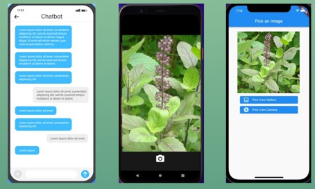
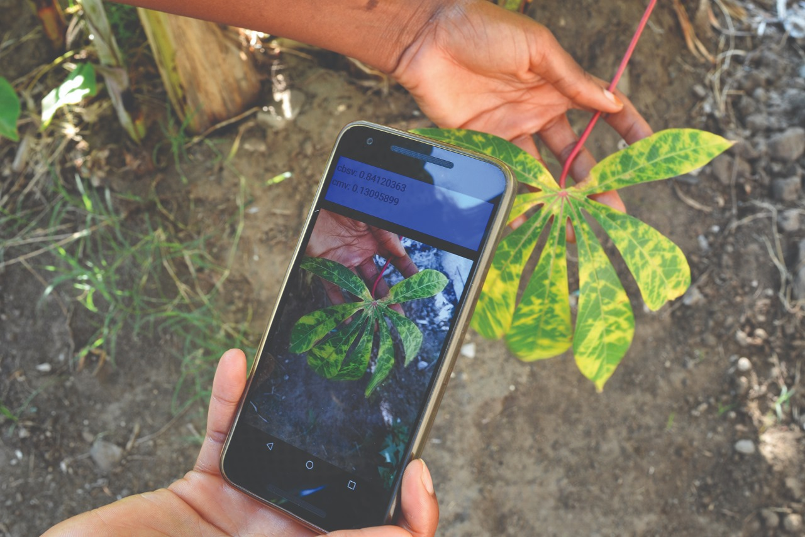
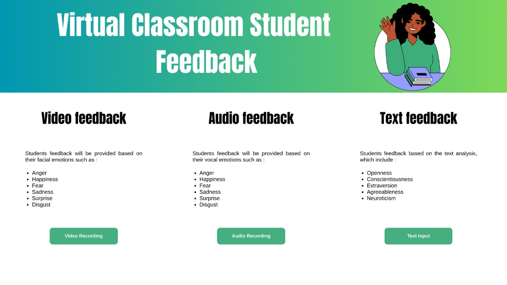

Shreyash Wetal
I am a highly motivated AI & Computer Vision professional, specializing in Large Language Models (LLMs), RAG pipelines, and real-time deep learning anomaly detection systems. Currently pursuing my Master's at the University of Sydney.
A Bit About Me
I am a dedicated technology professional with a solid background in designing AI-driven solutions for real-world automation, anomaly detection, and natural language processing.
My approach is research-oriented, with published work on non-invasive biometric identification and auto-traffic control. I love to design and implement end-to-end pipelines, optimizing large models, and creating intuitive user touchpoints.
Master of Computer Science (AI & Data Science)
Currently studying. Academic standing: WAM-75.
Bachelor of Technology in Information Technology
Graduated with a stellar CGPA: 8.57 / 10.
Work Experience
Artificial Intelligence Engineer (Team Lead)
- Develop scalable NLP and computer vision solutions using LLMs, RAG, LangChain, and Django.
- Fine-tune language models and build real-time inference pipelines integrated with Firebase.
- Innovate in prompt engineering, anomaly detection, and multi-modal AI systems.
Associate Prompt Engineer
- Developed and optimized AI-driven prompt engineering models for natural language processing (NLP) applications.
- Enhanced the accuracy of large language models through data-driven tuning and reinforcement learning techniques.
- Conducted research on prompt-based AI model behaviors and fine-tuned responses to improve contextual understanding.
- Designed and evaluated different prompt engineering techniques to optimize the output of LLMs across diverse use cases.
Team Member
- Contributed to the ABU Robocon project, specializing in ROS, Arduino, and sensor interfacing, with a focus on image processing.
- Developed and executed meticulous test plans to ensure the quality and readiness of applications, contributing to Arduino-based project enhancements.
Technical Expertise
Languages
AI & Data Libraries
Tools & Platforms
Certifications
- TensorFlow Developer Professional Certificate
- Deep Learning Specialization
- LangChain Application Development
- Object Detection Web Apps (TensorFlow/OpenCV)
- Quant Modelling (JP Morgan / Forage)
Projects I've Built
EyeDentify: Blink Biometric
A non-invasive biometric identification model using blink spatio-temporal patterns. Introduced Colour Outline Time Image (COTI) and Mean Intensity Time Image (MITI) templates, achieving 99.04% accuracy using MobileNetV2.
- MobileNetV2
- OpenCV
- Tensorflow
Urban UAV Surveillance
AI-powered drone-based surveillance system for real-time traffic monitoring and emergency detection. Implemented YOLOv8 object detection, simulated flights in Gazebo, and applied ORB feature extraction with geo-tagging.
- YOLOv8
- Gazebo
- ROS
- GDAL

03Medicinal Plant Identification
Smart India Hackathon project for the Ayush Ministry. Employed CNN, HOG, and Random Forest models to rapidly classify medicinal plants, alongside a supportive LangChain-powered conversational bot.
- CNN
- Random Forest
- LangChain
- Firebase

04Crop Leaf Disease Detection
Developed a CNN-based classifier integrated with a Random Forest model, detecting crop leaf diseases from a large HOG-featured preprocessed dataset with over 90% accuracy.
- CNN
- Random Forest
- HOG
- Python

05Multi-Modal Emotion Recognition
Combined vocal pitch (audio), facial expressions (image), and text sentiment inputs to create a comprehensive, robust emotion detection system for human-computer interaction.
- CNN
- Random Forest
- NLTK
- Audio Processing
Publications & Awards
Research Papers
-
EyeDentify: Blink Biometric Spatio-Temporal Approach
Published in Australasian Joint Conference on Artificial Intelligence (AJCAI 2025, Springer).
Springer Link -
Integrating Unmanned Aerial Vehicles, AI Vision and IoT for Smart Drone Surveillance System
Published in Proceedings of the International Conference on Smart Cities—Volume 1 (ICSC 2024) · Nov 1, 2025.
Springer Link -
Intelligent Auto Traffic Signal Controller
Published in International Journal of Science and Applied Research. Focused on emergency vehicle prioritization.
PDF Link
Honors & Achievements
-
TATA Trusts / FIAT Scholar
Awarded an annual scholarship of 1 Lakh INR by FIAT India Pvt. Ltd in recognition of academic excellence.
-
Workshop Coordinator
Invited to SIAC Baramati under TATA Trusts to coordinate specialized workshops for young engineers.
-
National Top 20 Finalist
Placed in the top 20 finalists at the RoboKidz Soccer Bot Competition, representing the country.
Let's Work Together
I am always open to discussing cutting-edge AI deployments, research collaborations, or full-time roles in machine learning engineering. Reach out via email or connect with me on social platforms!
Click below to copy my direct email to your clipboard: